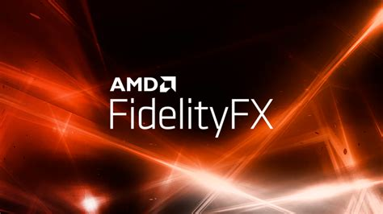
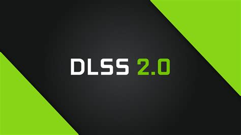
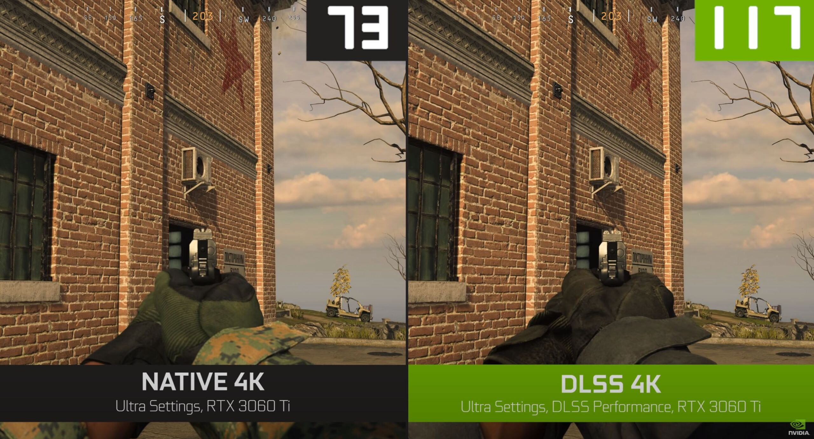
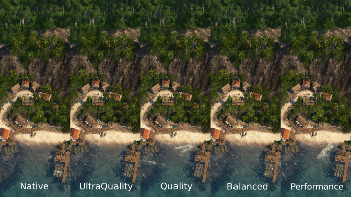

Certains algorithmes utilisant l'aprentissage automatique existe pour le jeu vidéo, tel que le dlss 2.0 de nvidia, ou le fidelityFx d'AMD


Logos des logiciels
Ces deux logiciels sont des logiciels qui augmentent la taille des images sortantes, en direct, appeler "temporal image upscaling"
Ils permettent de changer la résolution de l'image sortant de l'écran en direct, tout cela en utilisant un algorithme, qui agrandit la résolution de l'image en direct, mais cela de manière intelligente, qui permet de perdre le moins de qualité possible, tout cela en gagnant en image par seconde, du fait de la résolution native baisser.
Ils ont tous deux leurs avantages, le DLSS existe depuis plus longtemps (d'où le 2.0), mais ne peut être utilisé que sur les cartes graphiques ressentes, le fidelityFx est assez jeune, mais est fait de telle sorte à pouvoir être utilisé sûr de plus vieux processeurs graphiques
Leur mode de fonctionnement est assez similaire, ce sont tous deux des algorithmes de machine learning, à qui l'on a fait subir de l'upscaling, jusqu'à ce que les images soient le plus qualitatives possible, ces algorithmes sont encore en cours d'apprentissage aujourd'hui en interne dans les entreprises, comme le DLSS qui à sa version 3.0 qui est en cours de travailler, enfin, selon des rumeurs.
voici quelque image ilustrant ces algorithmes :


images provenant des sites des deux entreprises